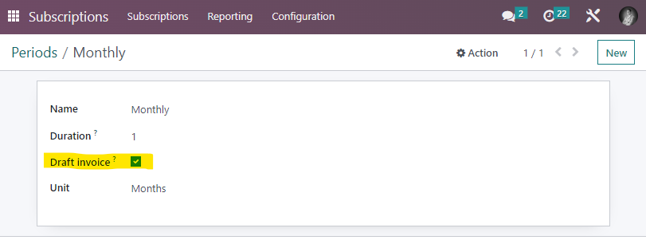

With the latest update to Odoo 16, it is no longer possible to generate draft invoices through the option that was previously available in subscription models. Invoices linked to subscriptions are now automatically posted and sent. However, there are times when it is still necessary to create a draft invoice, for example, to ensure that everything has gone smoothly and then manually process and send the subscription invoice.
To address this issue, we have developed a custom module that allows you to once again generate draft invoices. Simply check the "Draft invoice" box in the configuration of the recurrence linked to the invoice.
The configuration of the recurrence model can be done in Subscriptions > Configuration > Recurrence Period.
Our module offers a simple and convenient solution to help you streamline your subscription billing process, saving you time and effort.
Download our module today and start creating draft invoices again!
